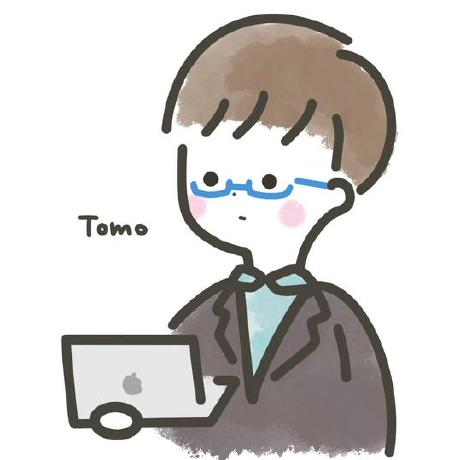

外部リンク集
-
アルゴリズム工学・自然言語処理研究室
釧路工業高等専門学校 情報工学科 アルゴリズム工学・自然言語処理研究室のウェブサイトです.
https://www.kushiro-ct.ac.jp/jjackpot/home/
-
アルゴリズム研究室 - 北海道大学
〒060-0814 北海道札幌市北区北14条西9丁目 北海道大学 大学院情報科学研究院 情報理工学部門 知識ソフトウェア科学分野 アルゴリズム研究室
https://www-alg.ist.hokudai.ac.jp
-
釧路高専 プログラミング研究部
プログラミング研究部では、プログラミングなどの興味を持った情報技術を、みんなで楽しく話し合いながら学んでいます。色々な分野の仲間がいるので、普段んの授業では学べないような幅広い知識を身につけることができます。
https://nitkpc.com
-
UDHI-LAB
デザイナーとエンジニアをやってます！
UDHI-LAB ホームページ
https://udhi-lab.com

このWebページを作成しました！